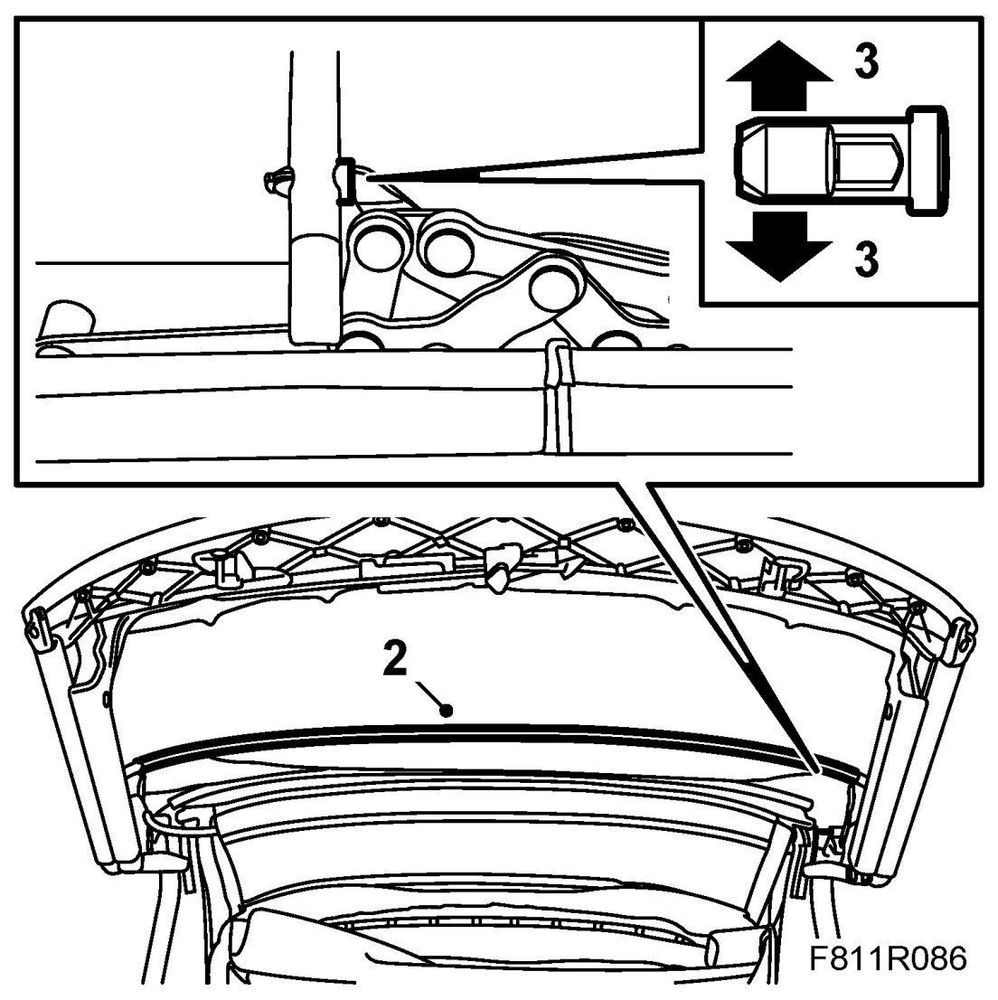
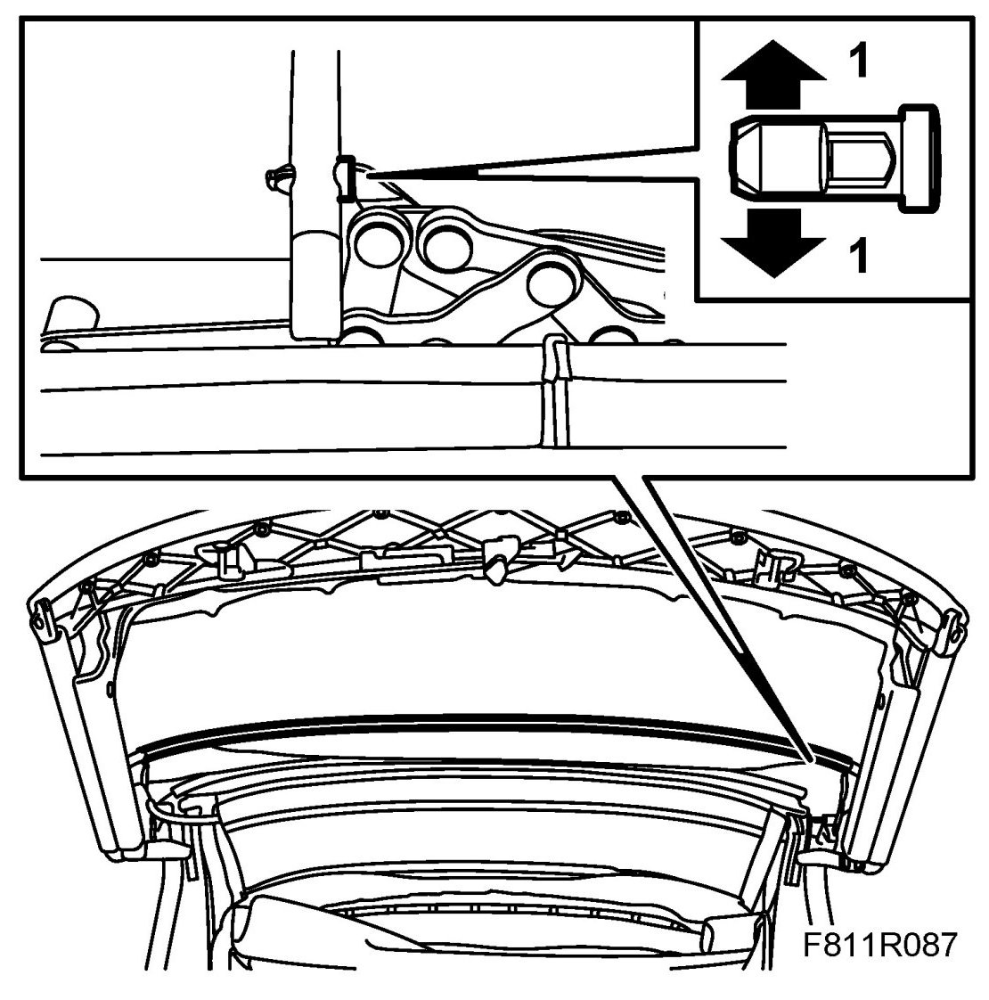
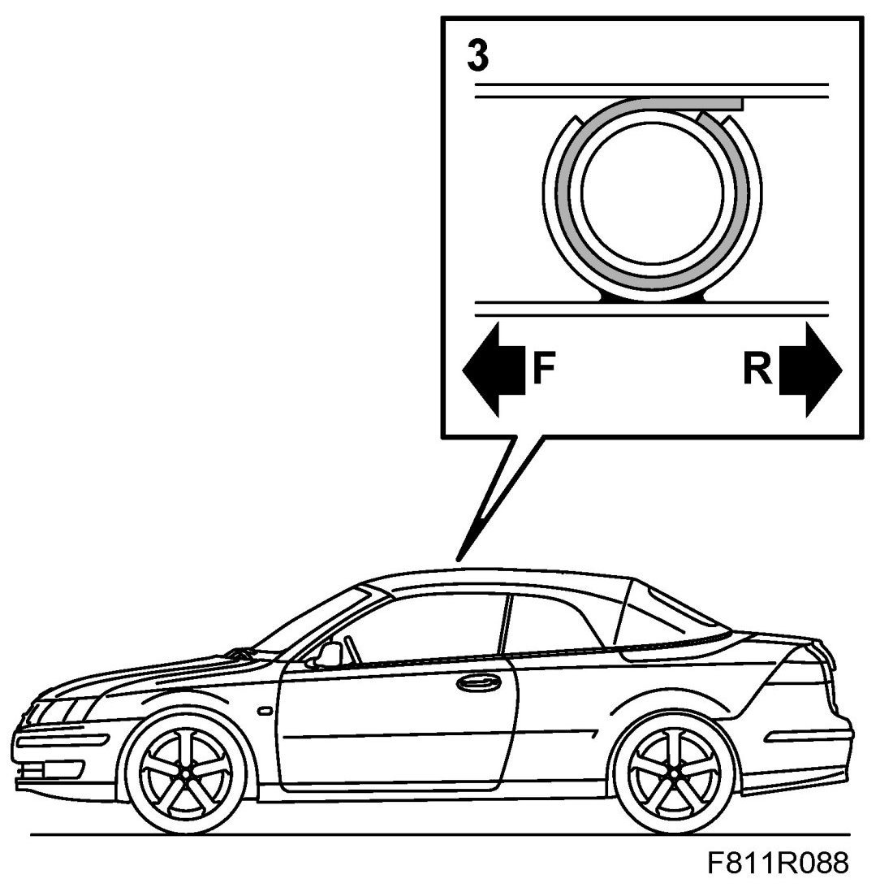
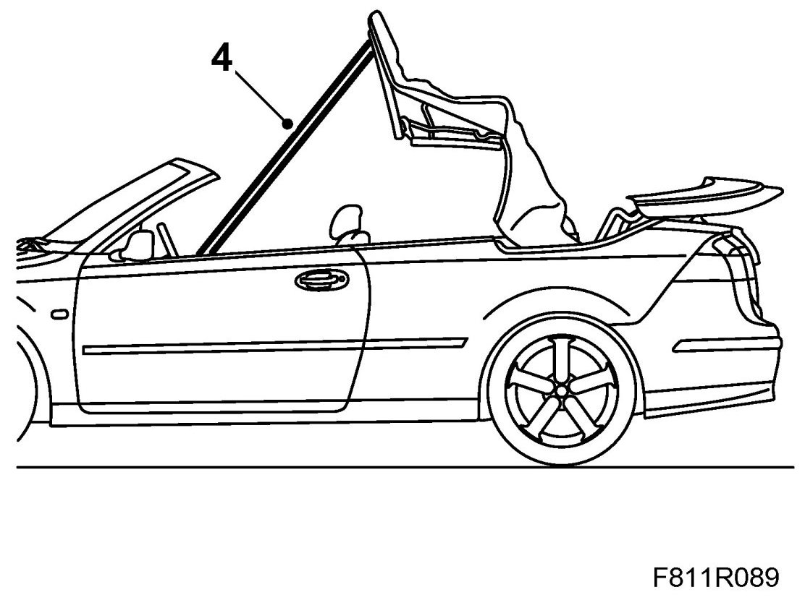

Second Bow
Second Bow
Removing
1. Remove the Headlining until the headlining's plastic holder can be taken off the second bow.
2. Remove the top cover from the second bow.

3. Remove the bow mounting locking lug using two screwdrivers. Knock forward the bow together with the bow mounting away from the soft top mechanism.
4. Remove the second bow.
Fitting
1. Put the second bow in mounting position. Press on the soft top mechanism until the bow mounting locking lugs hook on.

2. Remove the soft top support and open the soft top completely.
3. Fasten some new double-sided adhesive tape on the second bow. Fold the fabric tabs of the outer roof around the second bow. Observe the centre markings on the parts.

4. Operate the soft top half way down and secure it with the soft top support to prevent it falling down when the hydraulic pressure drops.

5. Fit the headlining.